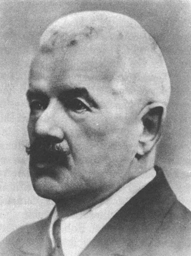

Slavná osbnost:Petr Bezruč
| Portrét | Základní údaje | Činy | |
|---|---|---|---|
|  | Petr Bezruč |
Díla:
|
|
| 15.září 1867,Opava,Rakouské císařství | 17.února 1958(ve věku 90 let),Olomouc,Československo | ||
|
|||
| Petr Bezruč | |||
| https://cs.wikipedia.org/wiki/Petr_Bezru%C4%8D | |||
značky a atributy tabulky
- rowspan
- Atribut zajišťující rozpětí přes několik řádků.
- colspan
- Atribut zajišťující rozpětí přes několik sloupců.
- table
- Značka, která vytvoří ohraničení tabulky
- thead
- Záhlaví tabulky
- tbody
- Tělo tabulky
- tr
- Řada tabulky
- th
- Nadpis sloupce tabulky
- td
- Buňky tabulky